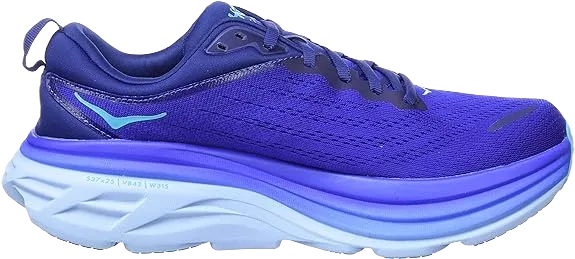

11 Best Shoes For Prolonged Standing
Prolonged standing can be exhausting, especially if you're not wearing the right footwear. Often, we prioritize style and appearance over comfort and durability, which is not the best approach. When your job involves standing all day, comfort and ergonomic features become even more crucial. Ignoring these factors can lead to serious foot problems in the long run.
With that in mind, today we bring you a list of the best athletic shoes for standing all day to help reduce the strain on your feet. Let's dive into the list without further delay!
-
#1
Brooks Ghost 12
.webp)
Who isn’t familiar with Brooks shoes? They have consistently provided unmatched comfort for vulnerable feet. If you work in an environment where you’re required to stand or walk all day, the Brooks Ghost running shoe will be your ultimate companion. Its soft, plush feel provides soothing comfort throughout the day, ensuring your feet remain comfortable no matter the hours spent on your feet.
The Brooks Ghost 12 features a lightweight design that not only enhances workflow efficiency but also keeps your joints in proper alignment, reducing strain. Its 3D fit print ensures a snug fit and supportive steps, making it one of the most comfortable shoes available for long periods of standing or walking.
The breathable air mesh helps keep your feet fresh, allowing for proper ventilation—essential in an enclosed shoe. The midsoles, equipped with BioMoGo DNA, further elevate the comfort level, providing both cushioning and responsiveness for long-lasting wear. -
#2
Reebok Floatride Run-2
.webp)
Reebok is certainly not a new name when it comes to quality footwear, and this time they’ve delivered the Reebok Floatride Run shoe, crafted for comfort and performance. If your job involves standing for long periods, you know that even the best shoes can sometimes cause discomfort. That’s why the sole of this shoe is designed with extra care. The soft, cozy Pebax foam in the midsole provides excellent support, ensuring your feet remain in their best position throughout the day.
The outsole is built for traction, featuring a powerful grip design that allows you to walk or run in multiple directions without worrying about awkward foot positioning. This stability ensures that your movements are safe and comfortable, regardless of the surface. The upper part of the shoe is made from high-quality fabric that feels soft and provides a snug fit, adding to the overall comfort.
Style-wise, the Reebok Floatride Run doesn’t disappoint. The sleek combination of blue and black with a white sole is not only eye-catching but also adds a fashionable touch to your everyday work attire. Plus, the shoe is lightweight, which contributes to its ergonomic design, making it an ideal choice for those on their feet all day. -
#3
Mizuno Wave Sky Waveknit-4
.webp)
Mizuno is primarily known as a men’s shoe, but its design certainly makes a style statement of its own. The Mizuno Wave Sky Waveknit 4 has garnered praise for blending professionalism with a chic, modern look. Its versatile appearance allows it to be worn in both casual and semi-casual settings, making it a go-to option for various occasions.
One of the standout features of this shoe is its rubber sole, which provides exceptional comfort and support. The sole is engineered to give a soft, cushioned feel, keeping your feet at ease throughout the day. Whether you’re walking, running, or standing, this shoe delivers a level of comfort that lasts.
The resilient foam technology in the Mizuno Wave Sky Waveknit 4 ensures that your feet are supported under pressure. No matter how much stress you put on your feet, the shoe’s cushioning system won’t let you down, maintaining a comfortable experience even during high-impact activities. -
#4
Saucony Triumph 18
.webp)
When it comes to jobs like retail, waiting tables, or even being a DJ, the legs and feet often bear the brunt of the day’s work. That’s why finding the right shoe is crucial. Once you invest in a quality pair, you likely won’t be looking to replace them anytime soon, so it’s important to make a smart choice.
The Saucony Triumph 18 is a great option for this kind of work. Made with synthetic and mesh materials, it allows for optimal airflow, keeping your feet cool and comfortable throughout the day. The soft, plush cushioning in the midsole, along with the PCR RUN midsole cushioning, adds flexibility and resilience to each step.
Additionally, the Triumph 18 is 25% lighter than many other shoes, which makes it perfect for fast-paced environments. Its lightweight build means you can move quickly without feeling fatigued, offering the comfort and support needed for long hours on your feet. -
#5
Adidas Ultraboost 20
.webp)
This is the kind of shoe you’ll never want to take off. Its chic style and ultra-comfortable design make it perfect for prolonged standing. Weighing in at just 11.1 pounds, Adidas has created a lightweight option that lets you feel like you're walking on clouds. Even if your feet are sore, this shoe brings together comfort and style seamlessly.
The Adidas Ultraboost 20 features softer lining pads that keep you comfortable all day long. Compared to its predecessor, the Ultraboost 19, this version offers an optimized heel and tailored fiber placement on the upper, with a Primeknit fabric that enhances both fit and feel.
The shoe's traction and design are incredibly user-friendly, allowing for a smooth running experience. With maximized traction in every step, it helps you move like a pro, whether you're standing or on the go, making it a great choice for comfort and performance. -
#6
New Balance Fuel-Cell Propel V2
.webp)
Next up, we have the renowned New Balance shoe, a top choice for many due to its excellent support for the feet. The thick outsole ensures that you won’t feel any bumps even during brisk walks. With its comfort-focused sole, you can run super-fast while still enjoying the cushioning. The high-quality rubber sole combined with 100% knitted construction adds an ergonomic touch, making it perfect for all-day wear.
This New Balance model also excels in ventilation, keeping your feet fresh and dry on sweaty days. The breathable design ensures that even in warm conditions, your feet remain cool and comfortable. The supportive fit also enhances traction, making it ideal for those who are constantly on the move.
Finally, the bold N logo adds a signature style to the shoe, giving it an appealing and stylish look. Whether you're walking, running, or just standing for long hours, this shoe offers a balance of comfort, durability, and fashion that makes it a reliable choice for any occasion. -
#7
Hoka Clifton-7 women shoe
When searching for the best shoes for prolonged standing, comfort is key. No one wants to wear shoes that hurt their feet all day long. The Hoka Clifton 7 is specifically designed with this in mind, featuring maximum padding and soft inner comfort liners to ensure all-day ease for your feet.
Its mesh upper encourages proper ventilation, while seamless synthetic overlays add to its sleek design. The breathable fabric is abrasion-free, ensuring that it remains gentle on sensitive feet during extended wear. Additionally, the removable foam and well-padded insoles contribute significantly to the shoe’s comfort, making it a perfect choice for long hours of standing.
The durable, full-length EVA midsole is crafted to be foot-friendly, minimizing the impact of shocks, jerks, or unwanted foot discomfort. The comfort liners also help absorb shock immediately, providing extra protection when encountering sharp objects. With these features, the Hoka Clifton 7 is an ideal shoe for anyone needing lasting comfort throughout the day. -
#8
Nike Monarch IV shoe
.webp)
The Nike Monarch IV has earned widespread praise for several reasons, making it a popular choice among buyers. Not only does it offer a unique and stylish design, but it also excels in providing comfort, making extended standing times much more enjoyable.
One of its standout features is the robust and high-quality rubber outsole, which is designed to handle sudden jerks and deliver controlled traction on various surfaces. Whether you’re on smooth or rough terrain, the outsole ensures stability and grip, giving you confidence in your every step.
The synthetic sole adds to the overall comfort, offering a soft and resilient feel. Combined with the foam cushioning, this shoe provides exceptional comfort, ensuring that you won’t experience any discomfort, even after long hours of standing or walking. -
#9
Brooks Men’s Glycerin 18
.webp)
This Brooks shoe makes a second appearance on the list, and for good reason. The comfort and user-friendly design make it a smart investment. The premium-quality mesh, combined with smooth fabric, ensures that it’s gentle on your feet. Additionally, the overall design, including the lacing, sole, and grip, is crafted for comfort, making long periods of standing much more bearable.
Whether you're at the gym or taking a morning jog, your toes and heels bear the brunt of the pressure. This shoe offers a thoroughly cushioned system, distributing weight evenly from toe to heel. The result is less strain on key areas of your foot, enhancing your comfort during physical activities.
Moreover, the responsive cushioning is designed for durability, ensuring long-lasting support. With this shoe, you're not just getting comfort for today, but for the many miles and hours of wear ahead. -
#10
New Balance Men’s Fresh Foam 1080
.webp)
The New Balance Men’s Fresh Foam 1080 V10 stands out as one of the best shoes for those who need to stand for extended periods. Crafted from a blend of 50% synthetic and 50% mesh fabric, this shoe combines durability and breathability. Its imported materials, including high-quality laces, eyelet foams, liners, and soles, ensure that every detail contributes to your comfort. The outer sole is made from soft rubber, providing a gentle touch on your feet while maintaining strength.
Designed to tackle bumpy terrains, the rubber sole is tough enough to handle stones, pebbles, and other obstacles without causing discomfort. Additionally, the cushioned insole features padding at the heel and toes, further enhancing comfort during long hours of wear. This shoe’s impressive performance for daily use has made it the top choice for those who need to stand for extended periods.
Its flexible design ensures that each step is comfortable, allowing wearers to maximize their experience without frequent replacements. With its durability and supportive features, the New Balance Fresh Foam 1080 V10 is built to last, making it a reliable footwear option for anyone on their feet all day. -
#11
Saucony Omni Walker
.webp)
The Saucony Omni Walker is equipped with dual-density foam and various features designed to keep your feet comfortable throughout the day. Ensuring proper foot health in enclosed shoes is crucial; without adequate ventilation for fresh airflow, discomfort and potential foot health issues can arise. This shoe excels in providing comfort with its liners and midfoot support bridge, making it an excellent choice for serious runners.
Crafted with an EVA midsole and a high durometer, the Omni Walker effectively reduces pronation for a more stable stride. Its biomechanical fit ensures you experience optimal comfort under various conditions. Additionally, the durable rubber sole provides safety and traction on challenging surfaces, including wet, slippery roads and uneven terrains, making it a reliable companion for daily wear.